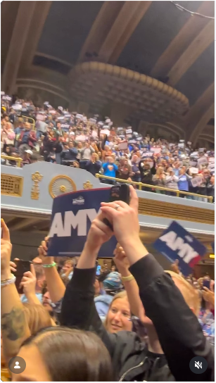
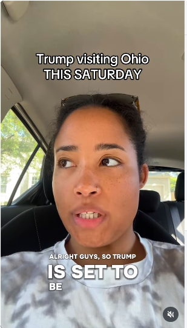
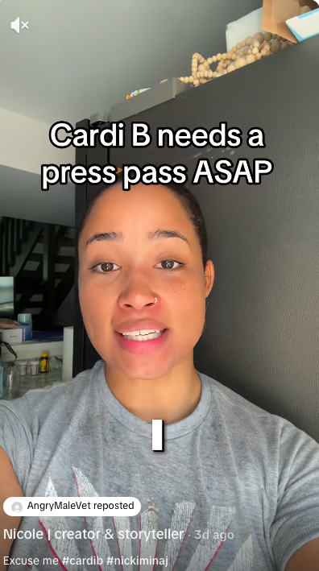
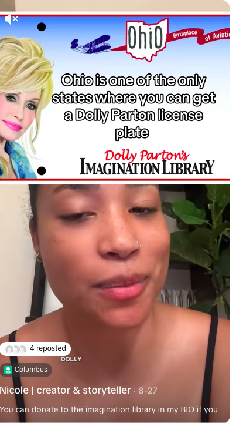

PHOTOGRAPHY · DIGITAL STORYTELLING · SOCIAL STRATEGY
Stories worth
looking closer.
Visual storytelling and audience-first content for people, brands, and ideas that deserve attention.
EXPLORE THE WORK ↓
SELECTED PHOTOGRAPHY
Frames & feeling.
People, movement, atmosphere, and the moments in between.
A visual archive of people, places, and the energy between them.
A LITTLE ABOUT ME
Curious by nature.
Storyteller by instinct.
I’m Nicole Tran, a creative professional working across photography, short-form video, social media strategy, and public-interest storytelling. I combine an on-camera perspective with professional photography, video editing, Adobe Creative Cloud, and data-informed content decisions.
My goal is to make content that feels human, communicates clearly, and gives people a reason to care.
COLLABORATIONS · BOOKINGS · CONTRACT WORK
Have a story
worth telling?
Available for creative collaborations, photography, content production, social strategy, campaigns, nonprofits, and brand partnerships.
nicole.tran.media@gmail.com ↗
SELECTED DIGITAL WORK
Content that connects.
Short-form storytelling shaped by clear hooks, platform-native editing, and performance insights.
INSTAGRAM REEL
Featured Instagram story
2,981 views

IGINSTAGRAM REEL
Creative and on-camera storytelling
8,971 views

IGINSTAGRAM · PUBLIC INTEREST
Public policy, made accessible
60.7K views

TTTIKTOK · COMMENTARY
Short-form commentary
24.6K views

TTTIKTOK · TOP-PERFORMING
Featured high-reach story
381.8K views
TIKTOK · COMMENTARY
Public-interest storytelling
60.6K views
View counts reflect figures supplied for this portfolio and may change over time.
VIEW MEDIA KIT & PERFORMANCE ↗